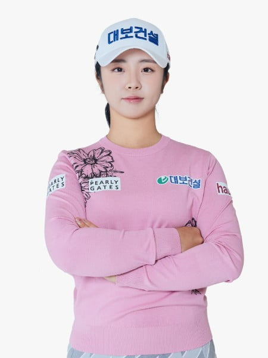

대보 골프단

- 대한골프협회 2017년 국가대표 상비군 출신
- 입회 : 2017년 7월
-
2024년 셀트리온 퀸즈 마스터즈 2위
맥콜·모나 용평 오픈 2위
롯데 오픈 2위 -
2023년 PLK 퍼시픽링스코리아 챔피언십 2위
메디힐 · 한국일보 챔피언십 10위
크리스에프앤씨 챔피언십 7위
에버콜라겐 · 더시에나 퀸즈크라운 5위
KG 레이디스 오픈 4위
OK금융그룹 읏맨 오픈 3위
대보 하우스디 오픈 12위 -
2022년 넥센 · 세인트나인 마스터즈 2022 5위
두산 매치플레이 챔피언십 9위
맥콜 모나파크 오픈 6위
제주 삼다수 마스터스 2위
하이트진로 챔피언십 2위 -
2021년 교촌 허니 레이디스 오픈 5위
셀트리온 퀸즈 마스터즈 6위
DB그룹 제35회 한국여자오픈 8위
한화 클래식 2021 5위
KB금융 스타챔피언십 9위 -
2020년 효성 챔피언십 8위
E1 채리티 여자 오픈 5위
BC카드·한경 레이디스컵 2020 6위
대유위니아 MBN 여자오픈 3위
- 입회 : 2023년 8월
- 2024년 KLPGA 정규투어 시드 순위전 23위
-
2023년 솔라고점프투어10차전 24위
솔라고점프투어9차전 준우승 -
2022년 제35회경기도지사배골프대회 2위
박카스배SBSGOLF 전국시도학생골프팀선수권대회단체전 3위
박카스배SBSGOLF 전국시도학생골프팀선수권대회개인전 6위
중고골프연맹스포츠조선배 6위
하이트진로 챔피언십 2위
경기도종합선수권대회 우승 -
2021년 중고골프연맹올포유그린배 우승
경기도협회장배 2위 -
2020년 강민구배제44회한국여자아마추어골프선수권대회 3위
중고골프연맹스포츠조선배 2위
-
2019년 경기도협회장배대회 우승
중고골프연맹그린배 3위
제주도지사배 4위
경기도종합선수권대회 2위 -
2018년 삼천리꿈나무골프대회 3위
경기도협회장배 2위

- 대한골프협회 2024 국가대표
-
2024년 위민스 아마추어 아시아 퍼시픽(WAAP) 8위
메디힐 · 한국일보 챔피언십 아마추어 우승(공동32위) -
2023년 파마리서치 리쥬란 드림투어 왕중왕전 2위
제16회 KB금융그룹배 여자 아마추어골프선수권대회 2위
제22회 제주특별자치도지사배 아마추어골프선수권대회 3위
제1회 클럽디 아마추어 에코 챔피언십 6위
롯데오픈 아마추어부문 1위
제21회 빛고을중흥배 아마추어골프선수권대회 3위
제1회 고창 고인돌배 아마추어골프선수권대회 2위
2023 SBSGOLF·롯데 오픈 드림투어 2위 -
2022년 SK네트웍스·서울경제 레이디스 클래식 아마추어부문 1위
제12회 KLPGA회장배 여자아마골프선수권대회(청소년부) 3위
제33회 KJGA회장배 전국중·고등학생골프대회 2위
2022 박카스배 SBSGOLF 전국시도학생골프팀선수권대회 2위
제33회 올포유-그린배 전국중·고등학생골프대회 3위
제51회 전국소년체육대회 골프부 경기 2위
제9회 한국C&T배 전국중·고등학생골프대회 1위
- 입회 : 2018년 9월
-
대한골프협회 2016년 국가대표 출신
대한골프협회 2017 ~ 2018년 국가대표 상비군 출신 -
2024년 KPGA 파운더스컵 with 한맥CC 우승
일본프로골프 투어(JGTO) 미즈노오픈 준우승 -
2023년 제39회 신한동해오픈 우승
제18회 DB손해보험 프로미 오픈 우승
KPGA 투어 아너스 K 솔라고CC 한장상 인비테이셔널 우승
-
2022년 KB금융 리브 챔피언쉽 4위
하나은행 인비테이셔널 5위
비즈플레이전자신문오픈 9위 -
2021년 LG SIGNATURE 플레이어스 챔피언십 4위
제네시스 챔피언십 3위
제37회 신한동해 오픈 21위
비즈플레이 전자신문 오픈 19위 - 2020년 해지스골프 KPGA 오픈 16위
-
2019년 챌린지투어 18회 대회 3위
챌린지투어 12회 대회 2위
챌린지투어 11회 대회 3위
챌린지투어 8회 대회 4위 - 2017년 7차 카이도시리즈 카이도 제주오픈 9위

- 입회 : 2006년 7월
- 내셔널타이틀 KPGA 코오롱 제61회 한국오픈 우승
-
2022년 SK telecom OPEN 7위
아시아드CC 부산오픈 7위 -
2021년 제네시스 챔피언십 8위
KPGA 군산 CC 오픈 3위
SK telecom OPEN 5위
제16회 DB손해보험 프로미 오픈 5위 -
2020년 비즈플레이 전자신문 오픈 10위
제36회 신한동해오픈 3위
제63회 KPGA 선수권대회 with A-ONE CC 7위 -
2018년 KPGA 코오롱 제61회 한국오픈 우승
2018년 롯데렌터카 오픈 우승 -
2017년 SK telecom OPEN 6위
코오롱 제60회 한국오픈 6위
카이도시리즈 카이도 제주오픈 2위
현대해상 최경주 인비테이셔널 2위
카이도 투어 챔피언십 2위_3회 연속 준우승
- 입회 : 2018년 9월
- 2024년 KPGA 코리안투어 QT 25위 1부 투어 시드확보
-
2023년 KPGA 스릭슨투어 통합포인트 랭킹 16위
- 스릭슨투어 20회 8위
- 스릭슨투어 19회 2위
- 스릭슨투어 14회 4위
- 스릭슨투어 6회 9위 - 2022년 KPGA 스릭슨투어 14회 6위
-
2021년 중고골프연맹올포유그린배 우승
경기도협회장배 2위 - 2017년 CGA Tour Hunan TAOHUAYUAN OPEN 2위
-
2015년 제19회 대보그룹배 매경 아마추어 골프선수권대회 3위
제26회 중고연맹 스포츠조선배 골프대회 2위
제13회 중고연맹 건국대 총장배 2위
- 대한골프협회 2024 국가대표
-
2023년 제21회 빛고을중흥배 아마추어골프선수권대회 3위
제31회 송암배 아마추어골프선수권대회 1위
제104회 전국체전 골프부경기 5위 -
2022년 제35회 경기도지사배 골프대회 1위
제26회 카카오VX 매경 아마추어골프선수권 대회 5위
제68회 허정구배 한국아마추어골프선수권 대회 3위
항저우 아시안게임 선발전 3위 -
2021년 제25회 매경솔라고배 아마추어골프선수권대회 1위
제19회 빛고을증흥배 아마추어골프선수권대회 2위
제16회 전라남도지사배 전국 중·고등학생 골프대회 1위
제8회 C&T배 전국 중·고등학생 골프대회 3위
제33회 경기도협회장배 골프대회 1위
제35회 경기도 종합선수권 대회 1위 -
2020년 제33회 경기도지사배 골프대회 4위
제34회 경기도 종합선수권 골프대회 4위 -
2019년 박카스배 SBSGOLF 전국시도학생골프팀 선수권대회 2위
제21회 제주도지사배 주니어 골프선수권대회 3위
블루원배 제37회 한국주니어 골프선수권대회 2위
제4회 YG CUP 전국 중·고등학생 골프대회 2위
제30회 중고연맹 회장배 전국 중·고등학생 골프대회 1위
제32회 경기도지사배 골프대회 3위
제33회 경기도 종합선수권 골프대회 1위
제31회 경기도 협회장배 골프대회 1위
제16회 KD그룹배 경인일보 전국 중·고등학생 골프대회 1위
- 대한골프협회 2024 국가대표 상비군
-
2024년 우수대학생 골프대회 개인전 우승
제2회 고창고인돌배 아마추어 골프선수권 우승 - 제41회 회장배 대학 대항 골프대회 우승
-
2023년 제8회 영건스매치플레이 4위
제22회 제주도지사배 아마추어 골프선수권대회 2위
블루원배 제40회 한국주니어 골프선수권대회 4위
제34회 중고연맹회장배 전국 중·고등학생 골프대회 5위
박카스배 SBSGOLF 전국시도학생골프팀 선수권대회 1위(단체전)
TOYOTA JUNIOR GOLF WORLD CUP 2위
제36회 경기도지사배 골프대회 1위
제10회 한국 C&T배 전국 중·고등학생 골프대회 1위 -
2022년 박카스배 SBSGOLF 전국시도학생골프팀 선수권대회 1위(단체전)
제36회 경기도종합선수권골프대회 2위
제9회 한국 C&T배 전국 중·고등학생 골프대회 3위
2021년 제1회 르카프배 전국 중·고등학생 골프대회 3위